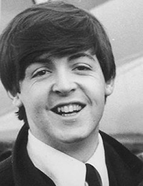

FAST FACTS!
Born: Liverpool, England (June 18, 1942)
He was known as the the group's bassist, main vocalist and co-founder
When Julian Lennon was going through a hard time in the midst of John and Cynthia's divorce, Paul comforted him by writing a song initially titled Hey Jules. He then changed the title to "Hey Jude", the massive hit, since it was easier to pronounce when singing.
Paul wrote the song "Yesterday", one of the most covered songs in recorded music history. There have been over 2,000 cover versions of it.
He was married to his first wife Linda Eastman from 1969 until her death in 1998 from breast cancer. With her, he had four children, Heather, a step-daughter, Mary, a photographer, Stella, a fashion designer, and James, a musician. He was married to Heather Mills from 2002 to 2006 and had a daughter, Beatrice. He is currently married to Nancy Shevell.
He was a member of the rock band Wings, which included his wife, Linda, from 1971 to 1981.
He received many awards including 21 Grammys, the Gershwin Prize, Kennedy Center Honors and was granted knighthood for his contributions to music.
Some of his biggest hits include the Bond theme song, "Live and Let Die", "Mull of Kintyre", "Say Say Say" and Wings hits- "Silly Love Songs" and "Band on the Run".